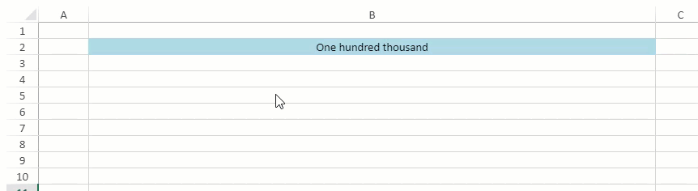
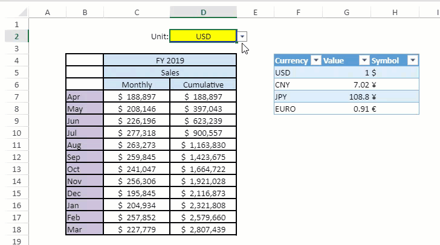
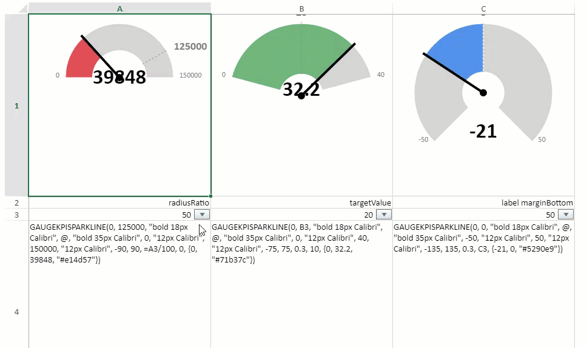

In SpreadJS, users can set the values and formulas in a cell at the same time. You can also format the displayed text based on the formula in the cell. The format string in the formatter of Style is extended with a formula or text value template which customizes the display value in a cell. The cell value acts as the parameter to the formatter which renders it in the cell, as an image or updated text.
The formatter is divided into three cases as below:
| Types of Formatter | Syntax Format | Examples |
|---|---|---|
| Normal cell formatter | Standard formatter |
"#,##0_);(#,##0)" "h:mm AM/PM" |
| Format string - Formula | Standard formula |
"=SUM(@, C1)" "=AVERAGE(C4:C7)" |
| Format string - Text value Template | Text string where formula is contained in "{{" "}}" |
"After {{=@}} approval, Total Sales Were: {{=SUM(Sales4)}}" “Hello, @” |
'@' symbol represents the current cell reference and can be used directly in the formula or text value template.
A formula can be set to the formatter of Style, apart from setting the cell value. The current cell can be referenced in the formula by using '@' symbol.
For example, a cell value can be set as a sum of range A1:A2:
style.formatter = '=SUM(@, A1:A2)';
Text value templates are very useful for creating dashboards and summarizing data. With text value templates, text values and formulas can be combined in a single cell and can be used inside "{{" and "}}" to wrap the formula in a string.
For example, a cell value can be combined with a day value, sum formula and static text:
style.formatter = "On {{=TEXT(TODAY(),"DDDD")}}, Total Sales Were: ${{=SUM(A1:A5)}}.";
The format string is very useful and can be used commonly in scenarios like:
Use Case 1
Numerals can be changed to words and their value is automatically updated whenever the cell's value is changed.
This example code implements a customized function to display numerals in words based on the cell value.
| JavaScript |
Copy Code
|
|---|---|
// initializing Spread var spread = new GC.Spread.Sheets.Workbook(document.getElementById('ss'), { sheetCount: 1 }); // Number to Words var sheet1 = spread.getSheet(0); sheet1.name('Number to Words'); spread.addCustomName('n_1', '{"";" One";" Two";" Three";" Four";" Five";" Six";" Seven";" Eight";" Nine";" Ten";" Eleven";" Twelve";" Thirteen";" Fourteen";" Fifteen";" Sixteen";" Seventeen";" Eighteen";" Nineteen"}'); spread.addCustomName('n_2', '{"";0;" Twenty";" Thirty";" Forty";" Fifty";" Sixty";" Seventy";" Eighty";" Ninety"}'); spread.addCustomName('n_3', '{"";"-One";"-Two";"-Three";"-Four";"-Five";"-Six";"-Seven";"-Eight";"-Nine"}'); var numberToWordsStyle = new GC.Spread.Sheets.Style(); numberToWordsStyle.formatter = '=TRIM(REPT(INDEX(n_1,1+INT(@/10^8))&" hundred",10^8<@)&IF(@-TRUNC(@,-8)<2*10^7,INDEX(n_1,1+MID(TEXT(@,"000000000"),2,2)),INDEX(n_2,1+MID(TEXT(@,"000000000"),2,2)/10)&INDEX(n_3,1+RIGHT(INT(@/10^6))))&REPT(" million",10^6<@)&IF(--RIGHT(INT(@/10^5)),INDEX(n_1,1+RIGHT(INT(@/10^5)))&" hundred","")&IF(@-TRUNC(@,-5)<2*10^4,INDEX(n_1,1+MID(TEXT(@,"000000000"),5,2)),INDEX(n_2,1+MID(TEXT(@,"000000000"),5,2)/10)&INDEX(n_3,1+RIGHT(INT(@/10^3))))&IF(--MID(TEXT(@,"000000000"),4,3)," thousand","")&IF(--RIGHT(INT(@/100)),INDEX(n_1,1+RIGHT(INT(@/100)))&" hundred","")&IF(MOD(@,100)<20,INDEX(n_1,1+RIGHT(@,2)),INDEX(n_2,1+RIGHT(@,2)/10)&INDEX(n_3,1+RIGHT(@))))'; numberToWordsStyle.name = 'NumberToWords'; numberToWordsStyle.backColor = "lightblue"; spread.addNamedStyle(numberToWordsStyle); sheet1.setColumnWidth(1, 700); sheet1.setStyleName(1, 1, 'NumberToWords'); sheet1.getCell(1, 1).value(765348921).hAlign(GC.Spread.Sheets.HorizontalAlign.center); sheet1.setColumnWidth(1, 700); |
|
Use Case 2
Consider another case where the monthly sales revenue can be represented in USD, CNY, JPY and EURO currencies by selecting the same from the dropdown. Based on the currency exchange rate, the revenue numbers are updated for each month. Also, whenever the currency exchange rate is updated, the revenue numbers are dynamically updated.

This example code implements the format string to update the sales revenue based on the exchange rate of different currencies.
| JavaScript |
Copy Code
|
|---|---|
var spread = new GC.Spread.Sheets.Workbook(document.getElementById('ss'), {
sheetCount: 1
});
initSpread(spread);
};
function initSpread(spread) {
var gcns = GC.Spread.Sheets;
spread.suspendPaint();
var sheet = spread.getActiveSheet();
var data = [
[, "FY 2019"],
[, "Sales"],
[, "Monthly", "Cumulative"],
["Apr", 188897, 188897],
["May", 208146, 397043],
["Jun", 226196, 623239],
["Jul", 277318, 900557],
["Aug", 263273, 1163830],
["Sep", 259845, 1423675],
["Oct", 241047, 1664722],
["Nov", 256306, 1921028],
["Dec", 195845, 2116873],
["Jan", 204934, 2321808],
["Feb", 257852, 2579660],
["Mar", 227779, 2807439]
];
sheet.setArray(3, 1, data);
sheet.setColumnWidth(2, 110);
sheet.setColumnWidth(3, 110);
sheet.setRowCount(20);
sheet.setColumnCount(9);
sheet.options.gridline.showHorizontalGridline = false;
sheet.options.gridline.showVerticalGridline = false;
sheet.getRange(3, 1, 15, 3).setBorder(
new gcns.LineBorder("black", gcns.LineStyle.medium),
{ all: true });
sheet.addSpan(3, 2, 1, 2);
sheet.addSpan(4, 2, 1, 2);
sheet.getRange(3, 2, 3, 2).backColor('#CFE1F3').hAlign(gcns.HorizontalAlign.center);
sheet.getRange(6, 1, 12, 1).backColor('#CCC1DA');
var cMapSource = [
{ "Currency": "USD", "Value": 1, "Symbol": "$" },
{ "Currency": "CNY", "Value": 7.02, "Symbol": "¥" },
{ "Currency": "JPY", "Value": 108.8, "Symbol": "¥" },
{ "Currency": "EURO", "Value": 0.91, "Symbol": "€" },
];
sheet.tables.addFromDataSource('cT', 3, 5, cMapSource);
[5, 6, 7].forEach((col) => { sheet.setColumnWidth(col, 80); });
sheet.getCell(1, 2).value("Unit:").hAlign(gcns.HorizontalAlign.right);
sheet.getRange(1, 3, 1, 1).backColor("yellow").setBorder(
new gcns.LineBorder("blue", gcns.LineStyle.medium),
{ all: true });
var dv1 = gcns.DataValidation.createFormulaListValidator('=cT[[#Data], [Currency]]');
sheet.setDataValidator(1, 3, dv1);
sheet.getCell(1, 3).hAlign(gcns.HorizontalAlign.center).value("USD");
sheet.getRange(6, 2, 12, 2)
.hAlign(gcns.HorizontalAlign.center)
.formatter('=VLOOKUP($D$2,cT[#Data],3,FALSE)&" "&TEXT(@*VLOOKUP($D$2,cT[#Data],2,FALSE),"###,###")');
spread.resumePaint();
|
|
Use Case 3
Consider a case where gauges are displayed to indicate the current KPI status. A customized function represents a gauge KPI sparkline which is set to the formatter of style. Different parameters like radiusRatio, targetValue and label marginBottom can be changed to see dynamic changes in gauge KPI sparkline.

This example code implements the format string to update KPI gauge values based on the cell values.
| JavaScript |
Copy Code
|
|---|---|
<script>
var GuageKPIType = {
circle: 0,
verticalBar: 1,
horizontalBar: 2
};
function getFontHeight(font) {
var htmlSpan = document.createElement('span');
htmlSpan.style.font = font;
htmlSpan.innerHTML = 'H';
var fontHeight = htmlSpan.offsetHeight;
return fontHeight;
}
function GaugeKPISparkline() {
GC.Spread.Sheets.Sparklines.SparklineEx.call(this);
this.CIRCLE_CENTER_RADIUS = 6;
this.TARGET_VALUE_INCREMENT = 3;
this.CURRENT_VALUE_INCREMENT = 5;
this.CURRENT_VALUE_LINE_WIDTH = 4;
this.DASH_LINE_SOLID_LENGTH = 2;
this.DASH_LINE_EMPTY_LENGTH = 4;
this.TEXT_MARGIN = 10;
this.PAINT_PADDING = 6;
}
GaugeKPISparkline.prototype = new GC.Spread.Sheets.Sparklines.SparklineEx();
GaugeKPISparkline.prototype.createFunction = function () {
var functionDescription = {
description: 'This function returns a data set used for representing a gauge KPI sparkline',
parameters: [
{
name: 'gaugeType'
},
{
name: 'targetValue'
},
{
name: 'targetValueFont'
},
{
name: 'currentValue'
},
{
name: 'currentValueFont'
},
{
name: 'minValue'
},
{
name: 'minValueFont'
},
{
name: 'maxValue'
},
{
name: 'maxValueFont'
},
{
name: 'minAngle'
},
{
name: 'maxAngle'
},
{
name: 'radiusRatio'
},
{
name: 'marginBottom'
},
{
name: 'colorRange'
},
{
name: '...'
}
]
};
var func = new GC.Spread.CalcEngine.Functions.Function("GAUGEKPISPARKLINE", 5, 15, functionDescription);
func.evaluate = function (args) {
var retValue = {
gaugeType: args[0],
targetValue: args[1],
targetValueFont: args[2],
currentValue: args[3],
currentValueFont: args[4],
minValue: args[5],
minValueFont: args[6],
maxValue: args[7],
maxValueFont: args[8],
minAngle: args[9],
maxAngle: args[10],
radiusRatio: args[11],
marginBottom: args[12]
};
var ranges = [], argsLength = args.length, tempArray;
for (var index = 13; index < argsLength; index++) {
var rangeValue = args[index];
if (rangeValue instanceof GC.Spread.CalcEngine.CalcArray) {
tempArray = rangeValue.array[0];
ranges.push({
start: tempArray[0],
end: tempArray[1],
color: tempArray[2]
});
}
}
retValue.ranges = ranges;
return retValue;
};
func.acceptsArray = function (argIndex) {
return argIndex >= 9 || argIndex >= 1 && argIndex <= 4;
};
return func;
};
GaugeKPISparkline.prototype.paint = function (ctx, value, x, y, width, height, options) {
if (!value) {
return;
}
if (value.gaugeType === GuageKPIType.circle) {
ctx.save();
ctx.rect(x, y, width, height);
ctx.clip();
this.paintCircle(ctx, value, x, y, width, height, options);
ctx.restore();
}
};
GaugeKPISparkline.prototype.getCircleData = function (ctx, value, x, y, width, height, options) {
var zoomFactor = options.zoomFactor;
var currentValueHeight = getFontHeight(value.currentValueFont) * zoomFactor,
targetValueHeight = getFontHeight(value.targetValueFont) * zoomFactor;
var PAINT_PADDING = this.PAINT_PADDING, TEXT_MARGIN = this.TEXT_MARGIN;
var minAngle = value.minAngle, maxAngle = value.maxAngle;
var minValueWidth = Math.ceil(ctx.measureText(value.minValue).width),
maxValueWidth = Math.ceil(ctx.measureText(value.maxValue).width);
var textWidth = Math.max(minValueWidth, maxValueWidth);
var xOuterRadius = Math.floor(width / 2 - PAINT_PADDING - TEXT_MARGIN - textWidth);
var graphHeight = Math.floor(height - PAINT_PADDING * 2 - TEXT_MARGIN * 2 - currentValueHeight - targetValueHeight),
moreThanSemiCircle = Math.abs(minAngle) > 90 || Math.abs(maxAngle) > 90;
var yOuterRadius = moreThanSemiCircle ? graphHeight / 2 : graphHeight;
var outerRadius = Math.min(xOuterRadius, yOuterRadius);
var retValue = {
x: x + PAINT_PADDING + textWidth + TEXT_MARGIN + outerRadius,
y: y + PAINT_PADDING + targetValueHeight + TEXT_MARGIN + outerRadius,
outerRadius: outerRadius,
innerRadius: outerRadius * value.radiusRatio
};
retValue.currentValuePoint = {
x: retValue.x,
y: moreThanSemiCircle ? (retValue.y + outerRadius + TEXT_MARGIN + currentValueHeight) : (retValue.y + TEXT_MARGIN + currentValueHeight)
};
return retValue;
};
GaugeKPISparkline.prototype.getPaintData = function (value) {
var minRadian = (value.minAngle - 90) * Math.PI / 180, maxRadian = (value.maxAngle - 90) * Math.PI / 180;
var minValue = value.minValue, maxValue = value.maxValue;
var colorRanges = value.ranges, fillColor = 'lightgrey';
var valuePerRadian = (maxRadian - minRadian) / (maxValue - minValue);
var paintRanges = [];
if (colorRanges.length > 0) {
colorRanges.forEach(function (colorRange) {
paintRanges.push({
start: valuePerRadian * (colorRange.start - minValue) + minRadian,
end: valuePerRadian * (colorRange.end - minValue) + minRadian,
color: colorRange.color
});
});
paintRanges.unshift({ start: minRadian, end: paintRanges[0].start, color: fillColor });
paintRanges.push({ start: paintRanges[paintRanges.length - 1].end, end: maxRadian, color: fillColor });
} else {
paintRanges.push({ start: minRadian, end: maxRadian, color: fillColor });
}
return {
paintRanges: paintRanges,
fillColor: fillColor,
targetValueRadian: valuePerRadian * (value.targetValue - minValue) + minRadian,
currentValueRadian: valuePerRadian * (value.currentValue - minValue) + minRadian,
minValueRadian: minRadian,
maxValueRadian: maxRadian
};
};
GaugeKPISparkline.prototype.getPointOnCircle = function (x, y, radian, radius) {
return {
x: x + Math.cos(radian) * radius,
y: y + Math.sin(radian) * radius
};
};
GaugeKPISparkline.prototype.getCircleValuePaintInfo = function (circleCenterPoint, targetValuePoint, targetValueWidth) {
var TEXT_MARGIN = this.TEXT_MARGIN;
// TODO: consider text height
if (targetValuePoint.x > circleCenterPoint.x) {
return { x: targetValuePoint.x + TEXT_MARGIN, y: targetValuePoint.y, textAlign: 'left' };
}
if (targetValuePoint.x < circleCenterPoint.x) {
return { x: targetValuePoint.x - TEXT_MARGIN, y: targetValuePoint.y, textAlign: 'right' };
}
if (targetValuePoint.x === circleCenterPoint.x) {
if (targetValuePoint.y > circleCenterPoint.y) {
return { x: targetValuePoint.x, y: targetValuePoint.y + TEXT_MARGIN, textAlign: 'center' };
}
return { x: targetValuePoint.x, y: targetValuePoint.y - TEXT_MARGIN, textAlign: 'center' };
}
return { x: targetValuePoint.x, y: targetValuePoint.y, textAlign: 'left' };
};
GaugeKPISparkline.prototype.paintCircle = function (ctx, value, x, y, width, height, options) {
var zoomFactor = options.zoomFactor;
var circleData = this.getCircleData(ctx, value, x, y, width, height, options);
var innerRadius = circleData.innerRadius, outerRadius = circleData.outerRadius;
if (outerRadius <= 0) {
return;
}
var currentValuePoint = circleData.currentValuePoint;
var circleCenter = { x: circleData.x, y: circleData.y };
var paintData = this.getPaintData(value),
paintRanges = paintData.paintRanges, fillColor = paintData.fillColor;
ctx.save();
// <editor-folder desc="paint circles">
paintRanges.forEach(function (paintRange) {
// paint outer circle
ctx.beginPath();
ctx.moveTo(circleCenter.x, circleCenter.y);
ctx.fillStyle = paintRange.color || fillColor;
ctx.strokeStyle = 'white';
ctx.arc(circleCenter.x, circleCenter.y, outerRadius, paintRange.start, paintRange.end, false);
ctx.closePath();
ctx.fill();
ctx.stroke();
// paint inner circle
ctx.beginPath();
ctx.moveTo(circleCenter.x, circleCenter.y);
ctx.fillStyle = 'white';
ctx.strokeStyle = 'white';
ctx.arc(circleCenter.x, circleCenter.y, innerRadius, paintRange.start, paintRange.end, false);
ctx.closePath();
ctx.fill();
ctx.stroke();
});
// </editor-folder>
// <editor-folder desc="paint circle center">
ctx.beginPath();
ctx.moveTo(circleCenter.x, circleCenter.y);
ctx.fillStyle = 'black';
ctx.arc(circleCenter.x, circleCenter.y, this.CIRCLE_CENTER_RADIUS, 0, 2 * Math.PI, false);
ctx.fill();
// </editor-folder>
// <editor-folder desc="paint line">
// <editor-folder desc="paint target value line">
var targetValueInnerPointOnCircle = this.getPointOnCircle(circleCenter.x, circleCenter.y, paintData.targetValueRadian, innerRadius);
var targetValueOuterPointOnCircle = this.getPointOnCircle(circleCenter.x, circleCenter.y, paintData.targetValueRadian, outerRadius + this.TARGET_VALUE_INCREMENT);
ctx.save();
ctx.beginPath();
ctx.setLineDash([this.DASH_LINE_SOLID_LENGTH, this.DASH_LINE_EMPTY_LENGTH]);
ctx.moveTo(targetValueInnerPointOnCircle.x, targetValueInnerPointOnCircle.y);
ctx.strokeStyle = 'grey';
ctx.lineTo(targetValueOuterPointOnCircle.x, targetValueOuterPointOnCircle.y);
ctx.stroke();
ctx.restore();
// </editor-folder>
// <editor-folder desc="paint current value line">
var currentValuePointOnCircle = this.getPointOnCircle(circleCenter.x, circleCenter.y, paintData.currentValueRadian, outerRadius + this.CURRENT_VALUE_INCREMENT);
ctx.beginPath();
ctx.strokeStyle = 'black';
ctx.lineWidth = this.CURRENT_VALUE_LINE_WIDTH;
ctx.moveTo(circleCenter.x, circleCenter.y);
ctx.lineTo(currentValuePointOnCircle.x, currentValuePointOnCircle.y);
ctx.stroke();
// </editor-folder>
// </editor-folder>
// <editor-folder desc="paint value">
ctx.save();
ctx.beginPath();
ctx.textAlign = "start";
ctx.fillStyle = 'grey';
var minValueHeight = getFontHeight(value.minValueFont) * zoomFactor,
maxValueHeight = getFontHeight(value.maxValueFont) * zoomFactor;
var minMaxValueHeight = Math.floor(Math.max(minValueHeight, maxValueHeight));
// <editor-folder desc="paint min value">
var minValueFont = value.minValueFont || '10px Calibri';
ctx.font = minValueFont;
var minValue = value.minValue + '';
var minValueWidth = ctx.measureText(minValue).width;
var minValuePointOnCircle = this.getPointOnCircle(circleCenter.x, circleCenter.y, paintData.minValueRadian, outerRadius);
var minValueInfo = this.getCircleValuePaintInfo(circleCenter, minValuePointOnCircle, minValueWidth);
ctx.textAlign = minValueInfo.textAlign;
ctx.fillText(minValue, minValueInfo.x, minValueInfo.y + minMaxValueHeight / 2);
// </editor-folder>
// <editor-folder desc="paint max value">
var maxValueFont = value.maxValueFont || '30px Calibri';
ctx.font = maxValueFont;
var maxValue = value.maxValue + '';
var maxValueWidth = ctx.measureText(maxValue).width;
var maxValuePointOnCircle = this.getPointOnCircle(circleCenter.x, circleCenter.y, paintData.maxValueRadian, outerRadius);
var maxValueInfo = this.getCircleValuePaintInfo(circleCenter, maxValuePointOnCircle, maxValueWidth);
ctx.textAlign = maxValueInfo.textAlign;
ctx.fillText(maxValue, maxValueInfo.x, maxValueInfo.y + minMaxValueHeight / 2);
// </editor-folder>
// <editor-folder desc="paint target value">
var targetValueFont = value.targetValueFont || '16.667px Calibri';
ctx.font = targetValueFont;
var targetValue = value.targetValue + '';
var targetValueWidth = ctx.measureText(targetValue).width;
var targetValueInfo = this.getCircleValuePaintInfo(circleCenter, targetValueOuterPointOnCircle, targetValueWidth);
ctx.textAlign = targetValueInfo.textAlign;
ctx.fillText(targetValue, targetValueInfo.x, targetValueInfo.y);
ctx.restore();
// </editor-folder>
// <editor-folder desc="paint current value">
ctx.save();
ctx.beginPath();
var currentValueFont = value.currentValueFont || "25px Calibri";
ctx.font = currentValueFont;
var currentValue = value.currentValue + '';
ctx.textAlign = "center";
ctx.fillText(currentValue, currentValuePoint.x, currentValuePoint.y - value.marginBottom);
ctx.restore();
// </editor-folder>
// </editor-folder>
ctx.restore();
};
GaugeKPISparkline.prototype.paintHorizontalBar = function (ctx, value, x, y, width, height) {
// ...
};
GaugeKPISparkline.prototype.paintVerticalBar = function (ctx, value, x, y, width, height) {
// ...
};
</script>
<script>
$(document).ready(function () {
// initializing Spread
var spread = new GC.Spread.Sheets.Workbook(document.getElementById('ss'), { sheetCount: 1 });
// KPI Gauge
var sheet1 = spread.getSheet(0);
sheet1.name('KPI Gauge');
spread.addSparklineEx(new GaugeKPISparkline());
sheet1.suspendPaint();
sheet1.setRowHeight(0, 300);
sheet1.setColumnWidth(0, 300);
sheet1.setColumnWidth(1, 300);
sheet1.setColumnWidth(2, 300);
sheet1.setRowCount(4);
sheet1.setRowHeight(3, 300);
sheet1.setColumnCount(3);
sheet1.getCell(1, 0).text("radiusRatio").hAlign(2);
sheet1.getCell(1, 1).text("targetValue").hAlign(2);
sheet1.getCell(1, 2).text("label marginBottom").hAlign(2);
var radiusRatioSliderStyle = new GC.Spread.Sheets.Style();
radiusRatioSliderStyle.cellButtons = [{
imageType: GC.Spread.Sheets.ButtonImageType.dropdown,
command: "openSlider",
useButtonStyle: true,
}];
radiusRatioSliderStyle.dropDowns = [{
type: GC.Spread.Sheets.DropDownType.slider,
option: {
marks: [0, 50, 100],
step: 1,
width: 190,
direction: GC.Spread.Sheets.LayoutDirection.horizontal,
}
}];
var targetValueSliderStyle = new GC.Spread.Sheets.Style();
targetValueSliderStyle.cellButtons = [{
imageType: GC.Spread.Sheets.ButtonImageType.dropdown,
command: "openSlider",
useButtonStyle: true,
}];
targetValueSliderStyle.dropDowns = [{
type: GC.Spread.Sheets.DropDownType.slider,
option: {
max: 40,
marks: [0, 20, 40],
step: 1,
width: 190,
direction: GC.Spread.Sheets.LayoutDirection.horizontal,
}
}];
var marginBottomSliderStyle = new GC.Spread.Sheets.Style();
marginBottomSliderStyle.cellButtons = [{
imageType: GC.Spread.Sheets.ButtonImageType.dropdown,
command: "openSlider",
useButtonStyle: true,
}];
marginBottomSliderStyle.dropDowns = [{
type: GC.Spread.Sheets.DropDownType.slider,
option: {
max: 50,
marks: [0, 25, 50],
step: 1,
width: 190,
direction: GC.Spread.Sheets.LayoutDirection.horizontal,
}
}];
sheet1.setStyle(2, 0, radiusRatioSliderStyle);
sheet1.setValue(2, 0, 50);
sheet1.setStyle(2, 1, targetValueSliderStyle);
sheet1.setValue(2, 1, 20);
sheet1.setStyle(2, 2, marginBottomSliderStyle);
sheet1.setValue(2, 2, 50);
var style1 = new GC.Spread.Sheets.Style();
style1.formatter =
'=GAUGEKPISPARKLINE(0, 125000, "bold 18px Calibri", @, "bold 35px Calibri", 0, "12px Calibri", 150000, "12px Calibri", -90, 90, =A3/100, 0, {0, 39848, "#e14d57"})';
sheet1.setStyle(0, 0, style1);
sheet1.setValue(0, 0, 39848);
sheet1.getCell(3, 0).value(style1.formatter.substr(1, style1.formatter.length - 1)).wordWrap(true);
var style2 = new GC.Spread.Sheets.Style();
style2.formatter =
'=GAUGEKPISPARKLINE(0, B3, "bold 18px Calibri", @, "bold 35px Calibri", 0, "12px Calibri", 40, "12px Calibri", -75, 75, 0.3, 10, {0, 32.2, "#71b37c"})';
sheet1.setStyle(0, 1, style2);
sheet1.setValue(0, 1, 32.2);
sheet1.getCell(3, 1).value(style2.formatter.substr(1, style2.formatter.length - 1)).wordWrap(true);
var style3 = new GC.Spread.Sheets.Style();
style3.formatter =
'=GAUGEKPISPARKLINE(0, 0, "bold 18px Calibri", @, "bold 35px Calibri", -50, "12px Calibri", 50, "12px Calibri", -135, 135, 0.3, C3, {-21, 0, "#5290e9"})';
sheet1.setStyle(0, 2, style3);
sheet1.setValue(0, 2, -21);
sheet1.getCell(3, 2).value(style3.formatter.substr(1, style3.formatter.length - 1)).wordWrap(true);
sheet1.resumePaint();
});
</script>
|
|
Limitations